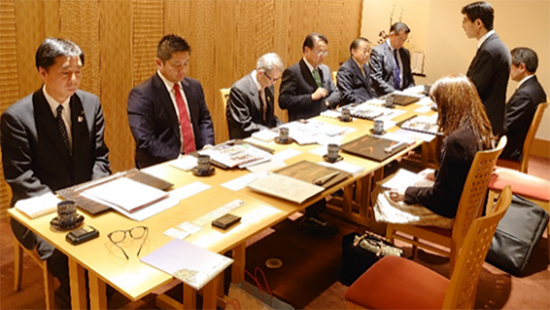
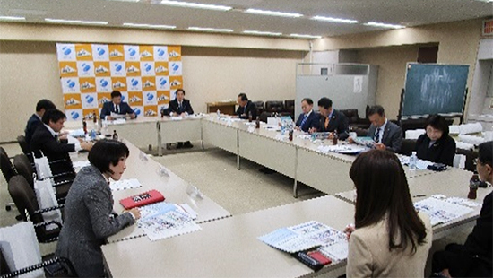
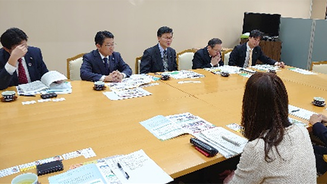
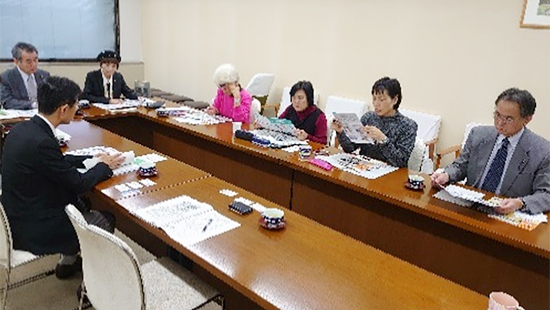

埼玉県議会各会派の皆さんと懇談しました
毎年、生協の取り組みへの理解を深め、意見交換を行う場として、県議会各会派の皆さんとの懇談会をおこなっています。
12月11日から12月19日に実施し、4会派30人の県議会議員が参加しました。
埼玉県議会自由民主党議員団役員との懇談
- 日時
- 2019年12月11日(水)17時30分～19時00分
- 場所
- ロイヤルパインズホテル浦和5階｢四季彩｣
- 出席
- 自民党県議団：小島信昭団長、岩﨑宏副団長、武内政文副団長、田村琢実幹事長、諸井真英総務会長、木下高志政務調査会長
埼玉県生協連：吉川尚彦会長理事、大久保常務理事、大山常務理事、加藤
懇談(抜粋)
- 生協の電気事業について
- 埼玉県が進めるLPWA通信網の活用について
- 埼玉県が進める人工知能の活用(AIプラットフォームづくり)について

無所属県民会議議員との懇談
- 日時
- 2019年12月16日(月)13時30分～14時30分
- 場所
- 埼玉県議会無所属県民会議控室
- 出席
- 無所属県民会議：岡重夫県議、醍醐清県議、鈴木正人県議、井上航県議、石川忠義県議、並木正年県議、松坂善浩県議、江原久美子県議、杉田茂実県議、八子朋弘県議、柿沼貴志県議、平松大佑県議、岡村ゆり子県議
埼玉県生協連：吉川尚彦会長理事、大久保常務理事、加藤
懇談(抜粋)
- 生協が取り組む子どもの貧困対策について
- 和光市UR団地の買い物難民の現状と生協の取り組みについて
- 生協と自治会との関係づくりと可能性
- 消費者被害防止サポーターなどの地域での見守り体制について

埼玉県議会公明党議員団議員との懇談
- 日時
- 2019年12月18日(水)13時30分～14時00分
- 場所
- 埼玉県議会公明党議員団控室
- 出席
- 公明党議員団：石渡豊県議、安藤友貴県議、西山淳次県議、権守幸男県議、橋詰昌児県議
埼玉県生協連：吉川尚彦会長理事、大久保常務理事、加藤
懇談(抜粋)
- 生協が取り組み、子どもの貧困対策について
- フードバンクの取り組みと関わるボランティアの現状について
- 市民団体が行っている小動物保護の取り組みに対する生協ができる支援の可能性
- 消費者被害防止サポーターなどの地域での見守り体制について

日本共産党埼玉県議団議員との懇談
- 日時
- 2019年12月19日(木)14時00分～15時00分
- 場所
- 日本共産党埼玉県議団控室
- 出席
- 日本共産党埼玉県議団：柳下礼子県議、村岡正嗣県議、秋山文和県議、前原かづえ県議、守屋裕子県議、秋山もえ県議
埼玉県生協連：吉川尚彦会長理事、大久保常務理事、加藤
懇談(抜粋)
- CSF(豚熱)の風評被害を防ぐための取り組みについて
- 住民どうしの助け合い活動を続けるためのサポートについて
- 県行政における生協の位置づけについて
- フードバンクをはじめとする貧困をなくす取り組みについて
